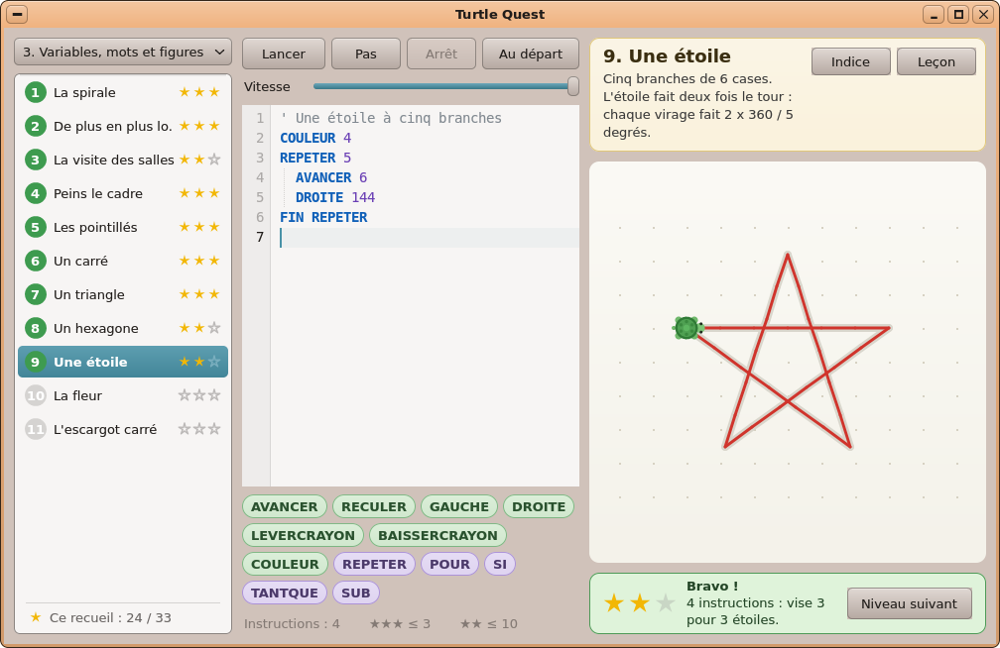

Un ordinateur complet.
Sur un Raspberry Pi 4.
Onyx est un système d’exploitation fait maison, avec son propre bureau, sa suite bureautique, son navigateur web et plus de 50 applications.


Le bureau
Tout est à sa place.
Une barre de menus en haut, un dock en bas. Vos applications sont rangées par tiroirs, vos fenêtres réparties sur plusieurs espaces de travail. On s’y retrouve dès la première minute.

Travailler
Écrivez, calculez, présentez.
Letters pour vos textes, un tableur pour vos chiffres, Slides pour vos présentations. Ils ouvrent et enregistrent les fichiers Word, Excel et PowerPoint, exportent en PDF et impriment sur votre imprimante réseau.
- Fichiers .docx, .xlsx, .pptx
- Export PDF
- Impression sans pilote à installer

Le web et vos proches
Le web d’aujourd’hui. Vos messages aussi.
Jet Browser affiche les sites modernes, vidéo et son compris. Mail réunit vos comptes Gmail, Outlook, iCloud ou tout autre dans une seule boîte de réception. Et vos conversations Telegram vous suivent.
Internet sur Onyx
Créer
Dessinez. Composez. Façonnez.
Peignez sur des calques dans Paint, retouchez vos photos, écrivez un morceau dans Koton, le studio de musique, ou dessinez une pièce à imprimer en 3D avec 3DForge.
Les applications de création
Vos photos, votre musique, vos films
Votre bibliothèque, bien rangée.
Photos classe vos images par jour et par album. Le lecteur multimédia retrouve votre musique et vos vidéos tout seul, et reprend le film là où vous l’aviez laissé.

Jouer
Seize jeux pour commencer.
Des cartes, des briques, un flipper, des énigmes : les jeux sont déjà là. Et si vous avez gardé les jeux de vos anciennes consoles, la Ludothèque les range et les lance.
Aucun jeu de console n’est fourni avec Onyx.
Tous les jeux
À vos couleurs.
Sept ambiances, du pêche au café noir, des fonds d’écran qui prennent vos couleurs. Deux clics, et le bureau vous ressemble.

Toujours à jour.
Onyx vérifie les mises à jour chaque jour et vous prévient. Le Gestionnaire de paquets installe le système et les applications en un clic, et en propose de nouvelles.

Et si vous êtes curieux.
Apprenez à programmer en guidant une tortue, assemblez des circuits logiques, écrivez vos propres applications en BASIC ou pilotez les broches du Raspberry Pi depuis l’écran.
Apprendre et bricoler
Plus de 50 applications, prêtes à l’emploi.

Letters. Le traitement de texte. Des lettres, des rapports, de vrais documents mis en page.

Tableur. Le tableur. Vos comptes, vos listes, vos graphiques.

Slides. Les présentations. Des diapositives soignées, projetées en plein écran.
Jet Browser. Le navigateur web d’Onyx, bâti sur WebKit, le moteur de Safari.
Mail. Tous vos comptes de courrier dans une seule boîte de réception.

Telegram. Votre compte Telegram, dans une messagerie au charme des années 2000.
Paint. Dessin et peinture sur calques.
Photos. Toutes vos photos au même endroit, rangées par jour.

Lecteur multimédia. Votre musique et vos vidéos, dans une seule bibliothèque.

Koton. Le studio de musique. Composez un morceau en partant des accords.

3DForge. Concevez des pièces à imprimer en 3D, étape par étape.

Calendrier. L’agenda. Vos rendez-vous par jour, par semaine ou par mois.
Captures d’écran en anglais.
Une carte microSD suffit.
Préparez la carte, branchez votre Raspberry Pi 4, et Onyx vous accueille.